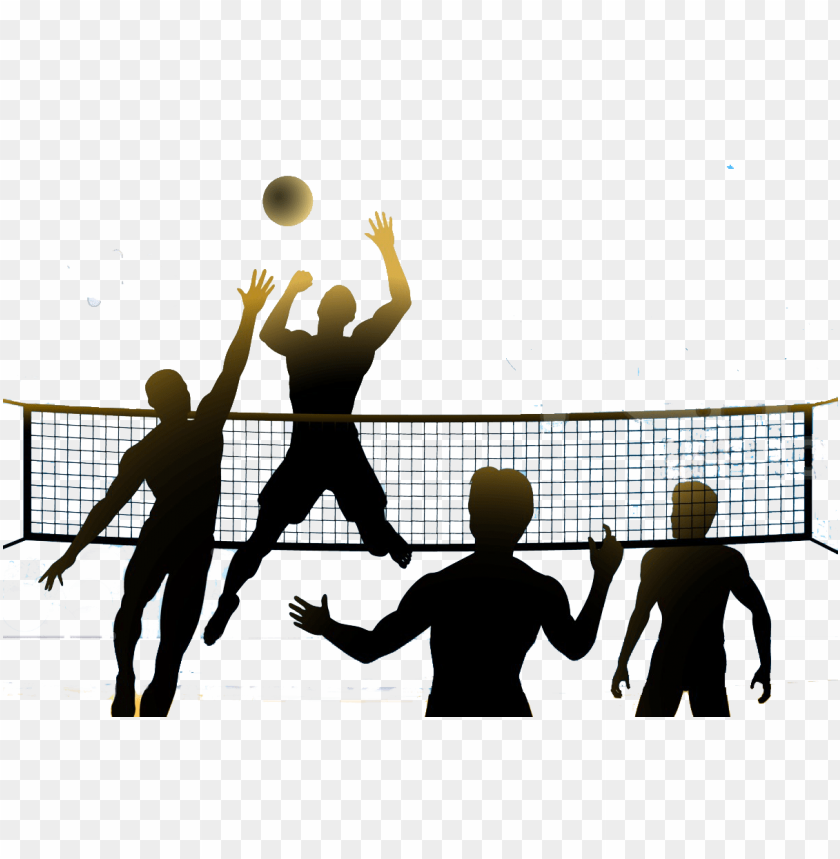
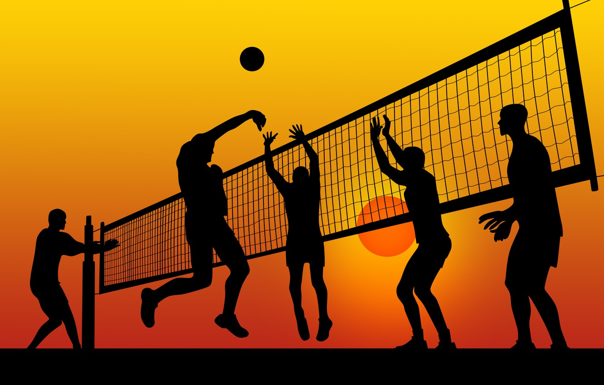

Волейбол
Волейбо́л (англ. volleyball от volley — «удар с лёту» и ball — «мяч») — вид спорта, командная спортивная игра, в процессе которой две команды соревнуются на специальной площадке, разделённой сеткой, стремясь направить мяч на сторону соперника таким образом, чтобы он приземлился на площадке противника (добить до пола), либо чтобы игрок защищающейся команды допустил ошибку. При этом для организации атаки игрокам одной команды разрешается не более трёх касаний мяча подряд (в дополнение к касанию на блоке).Волейбол — неконтактный, комбинационный вид спорта, где каждый игрок имеет строгую специализацию на площадке. Важнейшими качествами для игроков в волейбол являются прыгучесть для возможности высоко подняться над сеткой, реакция, координация, физическая сила для эффективного произведения атакующих ударов.
Для любителей волейбол — распространённое развлечение и способ отдыха благодаря простоте правил и доступности инвентаря.
Общие правила
 «Зоны» на площадке и перемещение игроков
Игра ведётся на прямоугольной площадке размером 18х9 метров. Волейбольная площадка разделена посередине сеткой. Высота сетки для мужчин — 2,43 м, для женщин — 2,24 м.
Игра ведётся сферическим мячом окружностью 65—67 сантиметров, массой 260—280 г.
Каждая из двух команд может иметь в составе до 14 игроков, на поле во время игры могут находиться 6 игроков. Цель игры — атакующим ударом добить мяч до пола, то есть до игровой поверхности площадки половины противника, или заставить его ошибиться.
Игра начинается вводом мяча при помощи подачи согласно жребию. После ввода мяча подачей и успешного розыгрыша подача переходит к той команде, которая выиграла очко. Площадка по количеству игроков условно разделена на 6 зон. После каждого перехода право подачи переходит от одной команды к другой в результате розыгрыша очка, игроки перемещаются в следующую зону по часовой стрелке.
Чёткой границы между зонами 1—6 нет, однако существуют ограничения на расстановку и действия игроков на площадке:
1) Игроки делятся на «переднюю линию» (зоны 2, 3, 4) и «заднюю линию» (зоны 1, 5, 6). Игроки задней линии не могут ставить блок и атаковать выше троса в передней зоне около сетки (ближе трёхметровой линии).
2) Во время подачи игроки на каждой стороне должны стоять так, чтобы игрок задней линии не находился ближе к сетке, чем соответствующий ему игрок передней линии (1 не ближе 2, 6 не ближе 3, 5 не ближе 4), также должен соблюдаться порядок внутри каждой из линий: слева направо должны располагаться игроки 4, 3 и 2; также слева направо должны располагаться игроки 5, 6 и 1. Однако правила, например, не запрещают игроку 5 зоны стоять ближе к сетке, чем игрок зоны 3. После подачи игроки могут произвольно перемещаться по площадке.
В современном профессиональном волейболе игроки специализируются на игре в определённой зоне («амплуа игроков»), перед подачей они встают на площадке так, чтобы выполнить требования к расстановке, а после подачи перемещаются в удобную для себя зону до конца розыгрыша.